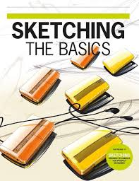
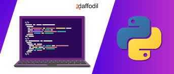
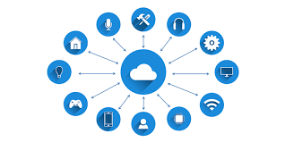

AkiraChix was founded in 2010 by a group of women who were passionate about changing the
landscape of the technology field.
It also creating a community that supports,
connects and inspires women in the tech space.
These young women challenged the
status quo by encouraging and facilitating more women .
Reason being to take up
careers in technology-related fields.
Its vision has continued to be led by Linda Kamau and Marie Githinji.
They have committed to champion the diversity and inclusion of women in the technical workforce.
Also changing the economic
capabilities of young women as well as shifting societal norms.
AkiraChix has
come a long way from its beginnings.
Where they are training young women
from Nairobi in a bus fitted with computers.
To a fully-fledged residential
campus with a goal of serving young women from all over Kenya and other African
Countries.
Ux Research
Ux research is the user experience where it is a
persons perception
and responses
These desault from the use of
anticipated use of a product
system in system service.
Industrial Design

Industrial design is is the professional practice
of designing products, devices, objects and services
It focus on
the physical appearance, functionality and manufacturability of a product.
Frontend web development

Frontend web development is the practice of producing
HTML, CSS and JavaScript
These is for a website or Web Application
so that a user can see and interact with them directly.
Frontend mobile development
Frontend mobile development is everything
that user
sees on a mobile app
That is including the design of app.
Python

Python is an open source programming language.
It was created by Guido Van Rossum in 1991.
Startup 101
Startup 101 is focusses on Enterpreneurship.
An Enterpreneur is an individual who creates a new business,bearing most of the risks and enjoying most of the rewards
Professional Development
It refers to all training, certification and education
that a worker needs to succeed in his or her career.
Navigating Your Journey
Navigating your journey it focus on building your self
confidence .
It is an amazing unit where you are even able to express
yourself and learning how to have gratitude.
That is being greatful for everything around you.
IOT

IOT describes the network of physical objects things that are embedded with sensors, software, and other technologies.
The purpose of connecting and exchanging data with other devices and systems over the Internet.